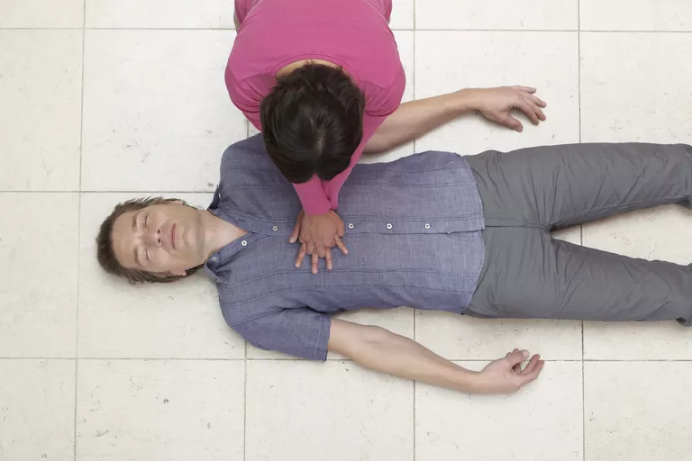

Hands Only CPR: No Pulse (Check) Needed
A recent visitor to had this to say about the Hands Only CPR Video:
"This video on gives wrong information. It says when a person stops breathing, give chest compressions. That is wrong. If the person's heart is still pumping, you do not do chest compressions -- you start rescue breathing."
This reader is correct that victims who are not breathing -- but still have a pulse -- would get artificial ventilation rather than CPR from a healthcare provider. Any EMT or paramedic would certainly check a pulse, but in layperson CPR the standard of care is to perform CPR on anyone who is not breathing -- no need to check a pulse. The idea is to simplify CPR for folks who rarely use it.
The Problem with Checking for a Pulse
Checking a pulse on someone who may or may not have one is not as easy as it sounds. Even those of us who've been doing this for years get fooled into feeling pulses that aren't there or not feeling pulses that are there. It takes a bit of practice to be comfortable with a pulse check -- even if it seems simple.
Believe me, when these changes first came out, my colleagues and I were convinced that lay rescuers were going to be pushing on chests every time we arrived at the scene of a medical emergency, regardless what the emergency would be. If people didn't have to check pulses, we just knew they were going to be doing compressions willy nilly on every poor sap who had the bad fortune to fall asleep on a park bench.
However, that's not what happened. Instead, we found that folks are more likely to do CPR if the rules aren't hard to remember. They're not doing CPR all the time, but they are doing it, which is the whole point. Taking the pulse check out of CPR made it easier to perform and easier to learn. It is much less threatening to do now, which makes lay rescuers jump in and save lives.